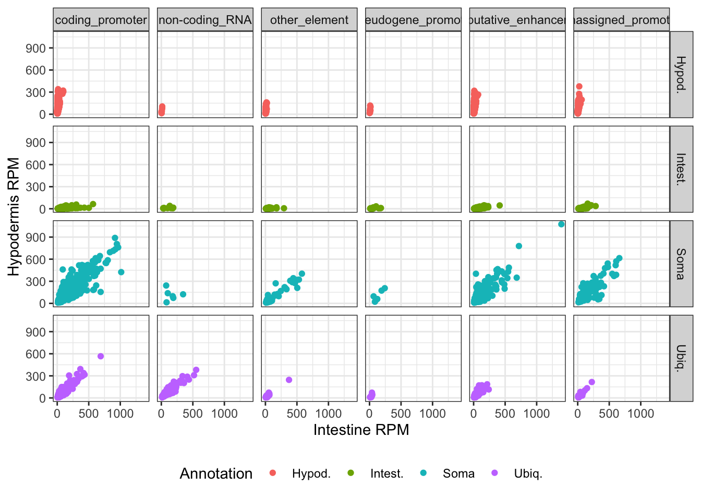

library(BiocFileCache)
#> Loading required package: dbplyr
# Create a BiocFileCache instance
bfc <- BiocFileCache()
# Download the xlsx file from Ensembl and cache it locally using BiocFileCache
xlsx_url <- "https://genome.cshlp.org/content/suppl/2020/11/16/gr.265934.120.DC1/Supplemental_Table_S2.xlsx"
xlsx_file <- bfcrpath(bfc, xlsx_url)
# The file is now downloaded and available
xlsx_file
#> BFC1
#> "/Users/runner/Library/Caches/org.R-project.R/R/BiocFileCache/39b123f5aca2_Supplemental_Table_S2.xlsx"How to use tidy principles for genomic ranges manipulation
2025-06-19
Source:vignettes/how-to-use-tidy-principles-for-granges-manipulation.qmd
Tidy data principles are a set of principles for structuring data in a way that makes it easier to manipulate and analyze. They have been popularized by the tidyverse collection of R packages, which includes dplyr for data manipulation and ggplot2 for data visualization. The tidy principles can also be applied to biological data, such as RNA-seq data, to facilitate analysis and visualization, thanks to the tidyomics meta-package.
Bioconductor packages used in this document
How to manipulate GRanges objects with tidy principles
For illustration, we are going to download a xlsx file provided as a Supplementary Data in (Serizay et al. 2020), and manipulate it using tidy principles.
Good practices recommended by the Bioconductor consortium suggest to use the BiocFileCache package to download and cache files from remote servers.
Excel files can be read into tibbles in R thanks to the read_xlsx() function from the readxl package.
library(readxl)
tbl <- read_xlsx(xlsx_file, sheet = "ATAC_metrics", skip = 2)
tbl
#> # A tibble: 47,514 × 32
#> chrom_ce11 start_ce11 end_ce11 annot_dev_age_tissues annot_dev_age_tissues_…¹
#> <chr> <dbl> <dbl> <chr> <chr>
#> 1 chrI 328 478 other_element no_transcription
#> 2 chrI 864 1014 other_element no_transcription
#> 3 chrI 1901 2051 putative_enhancer transcription_initiation
#> 4 chrI 3827 3977 non-coding_RNA unassigned_promoter
#> 5 chrI 4277 4427 putative_enhancer no_transcription
#> 6 chrI 11273 11423 coding_promoter coding_promoter
#> 7 chrI 13071 13221 putative_enhancer no_transcription
#> 8 chrI 15431 15581 unassigned_promoter transcription_initiation
#> 9 chrI 15723 15873 putative_enhancer transcription_initiation
#> 10 chrI 16075 16225 other_element no_transcription
#> # ℹ 47,504 more rows
#> # ℹ abbreviated name: ¹annot_dev_age_tissues_fwd
#> # ℹ 27 more variables: annot_dev_age_tissues_rev <chr>,
#> # promoter_gene_id_fwd <chr>, promoter_locus_id_fwd <chr>,
#> # promoter_gene_biotype_fwd <chr>, promoter_gene_id_rev <chr>,
#> # promoter_locus_id_rev <chr>, promoter_gene_biotype_rev <chr>,
#> # associated_gene_id <chr>, associated_locus_id <chr>, tss_fwd_ce11 <dbl>, …We convert it into a GRanges object directly using as_granges() from the plyranges package, using tidy evaluation as in dplyr package.
library(tidyomics)
#> ── Attaching core tidyomics packages ──────────────────────── tidyomics 1.5.0 ──
#> ✔ dplyr 1.1.4 ✔ tidyr 1.3.1
#> ✔ ggplot2 3.5.2 ✔ tidyseurat 0.8.0
#> ✔ nullranges 1.15.0 ✔ tidySingleCellExperiment 1.19.0
#> ✔ plyranges 1.29.0 ✔ tidySummarizedExperiment 1.19.0
#> ✔ tidybulk 1.21.0
#> ── Conflicts ────────────────────────────────────────── tidyomics_conflicts() ──
#> ✖ plyranges::between() masks dplyr::between()
#> ✖ tidybulk::bind_cols() masks ttservice::bind_cols(), dplyr::bind_cols()
#> ✖ plyranges::filter() masks tidybulk::filter(), dplyr::filter(), stats::filter()
#> ✖ S4Vectors::findMatches() masks utils::findMatches()
#> ✖ S4Vectors::head() masks utils::head()
#> ✖ plyranges::n() masks dplyr::n()
#> ✖ plyranges::n_distinct() masks dplyr::n_distinct()
#> ✖ IRanges::relist() masks BiocGenerics::relist(), utils::relist()
#> ✖ tidybulk::rename() masks S4Vectors::rename(), dplyr::rename()
#> ✖ plyranges::slice() masks IRanges::slice(), dplyr::slice()
#> ✖ IRanges::stack() masks S4Vectors::stack(), utils::stack()
#> ✖ S4Vectors::tail() masks utils::tail()
#> ✖ tidyseurat::tidy() masks tidySingleCellExperiment::tidy(), tidySummarizedExperiment::tidy(), generics::tidy()
#> ℹ Use the conflicted package (<http://conflicted.r-lib.org/>) to force all conflicts to become errors
gr <- tbl |>
as_granges(seqnames = chrom_ce11, start = start_ce11, end = end_ce11)
gr
#> GRanges object with 47514 ranges and 29 metadata columns:
#> seqnames ranges strand | annot_dev_age_tissues
#> <Rle> <IRanges> <Rle> | <character>
#> [1] chrI 328-478 * | other_element
#> [2] chrI 864-1014 * | other_element
#> [3] chrI 1901-2051 * | putative_enhancer
#> [4] chrI 3827-3977 * | non-coding_RNA
#> [5] chrI 4277-4427 * | putative_enhancer
#> ... ... ... ... . ...
#> [47510] chrX 17702756-17702906 * | unassigned_promoter
#> [47511] chrX 17711839-17711989 * | coding_promoter
#> [47512] chrX 17714483-17714633 * | putative_enhancer
#> [47513] chrX 17714955-17715105 * | putative_enhancer
#> [47514] chrX 17718452-17718602 * | other_element
#> annot_dev_age_tissues_fwd annot_dev_age_tissues_rev
#> <character> <character>
#> [1] no_transcription no_transcription
#> [2] no_transcription no_transcription
#> [3] transcription_initia.. transcription_initia..
#> [4] unassigned_promoter non-coding_RNA
#> [5] no_transcription transcription_initia..
#> ... ... ...
#> [47510] transcription_initia.. unassigned_promoter
#> [47511] no_transcription coding_promoter
#> [47512] transcription_initia.. transcription_initia..
#> [47513] transcription_initia.. transcription_initia..
#> [47514] no_transcription no_transcription
#> promoter_gene_id_fwd promoter_locus_id_fwd promoter_gene_biotype_fwd
#> <character> <character> <character>
#> [1] . . .
#> [2] . . .
#> [3] . . .
#> [4] . . .
#> [5] . . .
#> ... ... ... ...
#> [47510] . . .
#> [47511] . . .
#> [47512] . . .
#> [47513] . . .
#> [47514] . . .
#> promoter_gene_id_rev promoter_locus_id_rev promoter_gene_biotype_rev
#> <character> <character> <character>
#> [1] . . .
#> [2] . . .
#> [3] . . .
#> [4] WBGene00023193 Y74C9A.6 snoRNA
#> [5] . . .
#> ... ... ... ...
#> [47510] . . .
#> [47511] WBGene00019189 H11L12.1 protein_coding
#> [47512] . . .
#> [47513] . . .
#> [47514] . . .
#> associated_gene_id associated_locus_id tss_fwd_ce11 tss_rev_ce11
#> <character> <character> <numeric> <numeric>
#> [1] . . 463 342
#> [2] . . 999 878
#> [3] . . 2009 1957
#> [4] . . 3906 3908
#> [5] WBGene00022277 homt-1 4412 4363
#> ... ... ... ... ...
#> [47510] . . 17702913 17702741
#> [47511] . . 17711974 17711853
#> [47512] WBGene00007069 6R55.2 17714605 17714477
#> [47513] WBGene00007068 cTel55X.1 17715037 17714998
#> [47514] WBGene00007068 cTel55X.1 17718587 17718466
#> newly_annotated Germline_RPM Neurons_RPM Muscle_RPM Hypod._RPM
#> <logical> <numeric> <numeric> <numeric> <numeric>
#> [1] TRUE 45.719 1.424 1.134 2.578
#> [2] TRUE 43.748 4.362 4.218 8.489
#> [3] FALSE 58.300 4.206 3.958 4.545
#> [4] FALSE 729.297 84.286 203.708 96.350
#> [5] FALSE 31.131 6.148 5.033 6.894
#> ... ... ... ... ... ...
#> [47510] FALSE 9.051 3.128 4.679 3.518
#> [47511] TRUE 13.429 1.580 1.950 1.182
#> [47512] FALSE 51.752 11.670 14.639 26.422
#> [47513] FALSE 17.429 3.473 3.005 3.646
#> [47514] FALSE 80.090 4.099 11.997 9.589
#> Intest._RPM 1st.max.tissue 2nd.max.tissue 3rd.max.tissue
#> <numeric> <character> <character> <character>
#> [1] 2.915 Germline Intest. Hypod.
#> [2] 7.998 Germline Hypod. Intest.
#> [3] 7.806 Germline Intest. Hypod.
#> [4] 213.660 Germline Intest. Muscle
#> [5] 7.655 Germline Intest. Hypod.
#> ... ... ... ... ...
#> [47510] 38.540 Intest. Germline Muscle
#> [47511] 3.266 Germline Intest. Muscle
#> [47512] 65.473 Intest. Germline Hypod.
#> [47513] 8.771 Germline Intest. Hypod.
#> [47514] 15.883 Germline Intest. Muscle
#> 4th.max.tissue 5th.max.tissue ratio.1v2 ratio.2v3 ratio.3v4 ratio.4v5
#> <character> <character> <numeric> <numeric> <numeric> <numeric>
#> [1] Neurons Muscle 9.77487 1.202422 1.739127 0.883113
#> [2] Neurons Muscle 3.45646 1.007397 1.762534 0.797460
#> [3] Neurons Muscle 4.77063 1.708645 1.020881 0.846640
#> [4] Hypod. Neurons 2.24205 0.719981 3.072214 0.928693
#> [5] Neurons Muscle 2.78961 1.077880 0.880588 1.132635
#> ... ... ... ... ... ... ...
#> [47510] Hypod. Neurons 6.61420 0.895639 1.893015 1.043766
#> [47511] Neurons Hypod. 3.05009 1.158554 1.558102 1.448557
#> [47512] Muscle Neurons 1.99632 1.284442 1.260975 1.454653
#> [47513] Neurons Muscle 1.31179 2.442015 0.805662 0.929136
#> [47514] Hypod. Neurons 3.20781 1.035116 1.615237 2.277067
#> Annotation
#> <character>
#> [1] Germline
#> [2] Germline
#> [3] Germline
#> [4] Germline_Muscle_Inte..
#> [5] Unclassified
#> ... ...
#> [47510] Unclassified
#> [47511] Germline
#> [47512] Ubiq.-Biased
#> [47513] Unclassified
#> [47514] Germline
#> -------
#> seqinfo: 6 sequences from an unspecified genome; no seqlengthsLet’s say we are not interested in all the metadata columns, and we want to keep only the annot_dev_age_tissues, Annotation, and the columns ending with _RPM. We can use the select() function from dplyr to select these columns, just like we would do with a data.frame or tibble.
gr <- gr |>
select(annot_dev_age_tissues, Annotation, ends_with("_RPM"))
gr
#> GRanges object with 47514 ranges and 7 metadata columns:
#> seqnames ranges strand | annot_dev_age_tissues
#> <Rle> <IRanges> <Rle> | <character>
#> [1] chrI 328-478 * | other_element
#> [2] chrI 864-1014 * | other_element
#> [3] chrI 1901-2051 * | putative_enhancer
#> [4] chrI 3827-3977 * | non-coding_RNA
#> [5] chrI 4277-4427 * | putative_enhancer
#> ... ... ... ... . ...
#> [47510] chrX 17702756-17702906 * | unassigned_promoter
#> [47511] chrX 17711839-17711989 * | coding_promoter
#> [47512] chrX 17714483-17714633 * | putative_enhancer
#> [47513] chrX 17714955-17715105 * | putative_enhancer
#> [47514] chrX 17718452-17718602 * | other_element
#> Annotation Germline_RPM Neurons_RPM Muscle_RPM Hypod._RPM
#> <character> <numeric> <numeric> <numeric> <numeric>
#> [1] Germline 45.719 1.424 1.134 2.578
#> [2] Germline 43.748 4.362 4.218 8.489
#> [3] Germline 58.300 4.206 3.958 4.545
#> [4] Germline_Muscle_Inte.. 729.297 84.286 203.708 96.350
#> [5] Unclassified 31.131 6.148 5.033 6.894
#> ... ... ... ... ... ...
#> [47510] Unclassified 9.051 3.128 4.679 3.518
#> [47511] Germline 13.429 1.580 1.950 1.182
#> [47512] Ubiq.-Biased 51.752 11.670 14.639 26.422
#> [47513] Unclassified 17.429 3.473 3.005 3.646
#> [47514] Germline 80.090 4.099 11.997 9.589
#> Intest._RPM
#> <numeric>
#> [1] 2.915
#> [2] 7.998
#> [3] 7.806
#> [4] 213.660
#> [5] 7.655
#> ... ...
#> [47510] 38.540
#> [47511] 3.266
#> [47512] 65.473
#> [47513] 8.771
#> [47514] 15.883
#> -------
#> seqinfo: 6 sequences from an unspecified genome; no seqlengthsIn fact, most verbs from the dplyr package can be used with GRanges objects, such as filter(), mutate(), arrange(), group_by() and summarise().
gr |>
mutate(start = start - 1000, end = end + 1000) |>
filter(start > 1e6) |>
arrange(Intest._RPM) |>
group_by(annot_dev_age_tissues, Annotation) |>
summarize(n = plyranges::n())
#> DataFrame with 182 rows and 3 columns
#> annot_dev_age_tissues Annotation n
#> <character> <character> <integer>
#> 1 coding_promoter Germline 885
#> 2 coding_promoter Germline_Hypod. 21
#> 3 coding_promoter Germline_Hypod._Inte.. 8
#> 4 coding_promoter Germline_Intest. 19
#> 5 coding_promoter Germline_Muscle 39
#> ... ... ... ...
#> 178 unassigned_promoter Neurons_Muscle_Intest. 32
#> 179 unassigned_promoter Soma 94
#> 180 unassigned_promoter Ubiq. 56
#> 181 unassigned_promoter Ubiq.-Biased 176
#> 182 unassigned_promoter Unclassified 607Note that the summarize() function automatically returns a DataFrame, not a GRanges object.
To enhance compatibility with the tidyverse ecosystem, the plyranges package provides a as_tibble() method for GRanges objects, which converts them into tibbles. This allows you to use pass GRanges objects to ggplot for visualization.
gr |>
filter(Annotation %in% c("Intest.", "Hypod.", "Soma", "Ubiq.")) |>
as_tibble() |>
ggplot(aes(x = `Intest._RPM`, y = `Hypod._RPM`, color = Annotation)) +
geom_point() +
labs(x = "Intestine RPM", y = "Hypodermis RPM") +
facet_grid(Annotation~annot_dev_age_tissues) +
theme_bw() +
theme(legend.position = "bottom")
Finally, the join concept introduced by the dplyr package can also be applied to GRanges objects. In this case, the operation refers to joining overlapping, nearest, or preceding/following ranges, using the join_*_*() function from the plyranges package.
As an example, we can compare annotations from (Serizay et al. 2020) to chromosome arms/center
arms <- GRanges(
seqnames = rep(c("chrI", "chrII", "chrIII", "chrIV", "chrV", "chrX"), each = 3),
ranges = IRanges(
start = c(
1, 4550001, 10750001,
1, 4550001, 10750001,
1, 4450001, 10150001,
1, 4750001, 12650001,
1, 4850001, 16250001,
1, 2850001, 14250001
),
end = c(
4550000, 10750000, 15072423,
4550000, 10750000, 15279345,
4450000, 10150000, 13783700,
4750000, 12650000, 17493793,
4850000, 16250000, 20924149,
2850000, 14250000, 17718866
)
),
strand = "*",
part = rep(c("arm", "center", "arm"), 6)
)
gr |>
join_overlap_left(arms) |>
group_by(Annotation, part) |>
filter(Annotation %in% c("Germline", "Neurons")) |>
summarize(n = plyranges::n())
#> DataFrame with 4 rows and 3 columns
#> Annotation part n
#> <character> <character> <integer>
#> 1 Germline arm 1081
#> 2 Germline center 1103
#> 3 Neurons arm 1100
#> 4 Neurons center 1628Further reading
To read more about the tidyomics packages, please refer to the tidyomics GitHub organization page.
More tutorials are provided by the tidyomics GitHub organization in the tidy-ranges-tutorial website.
References
Serizay, Jacques, Yan Dong, Jürgen Jänes, Michael Chesney, Chiara Cerrato, and Julie Ahringer. 2020. “Distinctive regulatory architectures of germline-active and somatic genes in C. elegans.” Genome Res. 30 (12): 1752–65. https://doi.org/10.1101/gr.265934.120.
Session info
Click to display session info
sessionInfo()
#> R version 4.5.1 (2025-06-13)
#> Platform: x86_64-apple-darwin20
#> Running under: macOS Ventura 13.7.6
#>
#> Matrix products: default
#> BLAS: /Library/Frameworks/R.framework/Versions/4.5-x86_64/Resources/lib/libRblas.0.dylib
#> LAPACK: /Library/Frameworks/R.framework/Versions/4.5-x86_64/Resources/lib/libRlapack.dylib; LAPACK version 3.12.1
#>
#> locale:
#> [1] en_US.UTF-8/en_US.UTF-8/en_US.UTF-8/C/en_US.UTF-8/en_US.UTF-8
#>
#> time zone: UTC
#> tzcode source: internal
#>
#> attached base packages:
#> [1] stats4 stats graphics grDevices utils datasets methods
#> [8] base
#>
#> other attached packages:
#> [1] nullranges_1.15.0 plyranges_1.29.0
#> [3] tidybulk_1.21.0 tidyseurat_0.8.0
#> [5] SeuratObject_5.1.0 sp_2.2-0
#> [7] tidySingleCellExperiment_1.19.0 SingleCellExperiment_1.31.0
#> [9] tidySummarizedExperiment_1.19.0 ttservice_0.4.1
#> [11] SummarizedExperiment_1.39.0 Biobase_2.69.0
#> [13] GenomicRanges_1.61.0 GenomeInfoDb_1.45.3
#> [15] IRanges_2.43.0 S4Vectors_0.47.0
#> [17] BiocGenerics_0.55.0 generics_0.1.4
#> [19] MatrixGenerics_1.21.0 matrixStats_1.5.0
#> [21] ggplot2_3.5.2 tidyr_1.3.1
#> [23] dplyr_1.1.4 tidyomics_1.5.0
#> [25] readxl_1.4.5 BiocFileCache_2.99.5
#> [27] dbplyr_2.5.0 BiocStyle_2.37.0
#>
#> loaded via a namespace (and not attached):
#> [1] RcppAnnoy_0.0.22 splines_4.5.1 later_1.4.2
#> [4] BiocIO_1.19.0 bitops_1.0-9 filelock_1.0.3
#> [7] tibble_3.2.1 cellranger_1.1.0 polyclip_1.10-7
#> [10] preprocessCore_1.71.0 XML_3.99-0.18 fastDummies_1.7.5
#> [13] lifecycle_1.0.4 httr2_1.1.2 globals_0.18.0
#> [16] lattice_0.22-7 MASS_7.3-65 magrittr_2.0.3
#> [19] plotly_4.10.4 rmarkdown_2.29 yaml_2.3.10
#> [22] httpuv_1.6.16 Seurat_5.3.0 sctransform_0.4.2
#> [25] spam_2.11-1 spatstat.sparse_3.1-0 reticulate_1.42.0
#> [28] cowplot_1.1.3 pbapply_1.7-2 DBI_1.2.3
#> [31] RColorBrewer_1.1-3 abind_1.4-8 Rtsne_0.17
#> [34] purrr_1.0.4 RCurl_1.98-1.17 rappdirs_0.3.3
#> [37] ggrepel_0.9.6 irlba_2.3.5.1 listenv_0.9.1
#> [40] spatstat.utils_3.1-4 goftest_1.2-3 RSpectra_0.16-2
#> [43] spatstat.random_3.4-1 fitdistrplus_1.2-2 parallelly_1.45.0
#> [46] codetools_0.2-20 DelayedArray_0.35.1 tidyselect_1.2.1
#> [49] UCSC.utils_1.5.0 farver_2.1.2 spatstat.explore_3.4-3
#> [52] GenomicAlignments_1.45.0 jsonlite_2.0.0 ellipsis_0.3.2
#> [55] progressr_0.15.1 ggridges_0.5.6 survival_3.8-3
#> [58] tools_4.5.1 ica_1.0-3 Rcpp_1.0.14
#> [61] glue_1.8.0 gridExtra_2.3 SparseArray_1.9.0
#> [64] xfun_0.52 withr_3.0.2 BiocManager_1.30.25
#> [67] fastmap_1.2.0 fansi_1.0.6 digest_0.6.37
#> [70] R6_2.6.1 mime_0.13 scattermore_1.2
#> [73] tensor_1.5 spatstat.data_3.1-6 RSQLite_2.3.11
#> [76] utf8_1.2.5 data.table_1.17.4 rtracklayer_1.69.0
#> [79] InteractionSet_1.37.0 httr_1.4.7 htmlwidgets_1.6.4
#> [82] S4Arrays_1.9.0 uwot_0.2.3 pkgconfig_2.0.3
#> [85] gtable_0.3.6 blob_1.2.4 lmtest_0.9-40
#> [88] XVector_0.49.0 htmltools_0.5.8.1 dotCall64_1.2
#> [91] scales_1.4.0 png_0.1-8 spatstat.univar_3.1-3
#> [94] knitr_1.50 rjson_0.2.23 tzdb_0.5.0
#> [97] reshape2_1.4.4 nlme_3.1-168 curl_6.2.3
#> [100] cachem_1.1.0 zoo_1.8-14 stringr_1.5.1
#> [103] KernSmooth_2.23-26 parallel_4.5.1 miniUI_0.1.2
#> [106] restfulr_0.0.15 pillar_1.10.2 grid_4.5.1
#> [109] vctrs_0.6.5 RANN_2.6.2 promises_1.3.3
#> [112] xtable_1.8-4 cluster_2.1.8.1 evaluate_1.0.3
#> [115] readr_2.1.5 Rsamtools_2.25.0 cli_3.6.5
#> [118] compiler_4.5.1 rlang_1.1.6 crayon_1.5.3
#> [121] future.apply_1.11.3 labeling_0.4.3 plyr_1.8.9
#> [124] stringi_1.8.7 BiocParallel_1.43.2 viridisLite_0.4.2
#> [127] deldir_2.0-4 Biostrings_2.77.1 lazyeval_0.2.2
#> [130] spatstat.geom_3.4-1 Matrix_1.7-3 RcppHNSW_0.6.0
#> [133] hms_1.1.3 patchwork_1.3.0 bit64_4.6.0-1
#> [136] future_1.58.0 shiny_1.10.0 ROCR_1.0-11
#> [139] igraph_2.1.4 memoise_2.0.1 bit_4.6.0